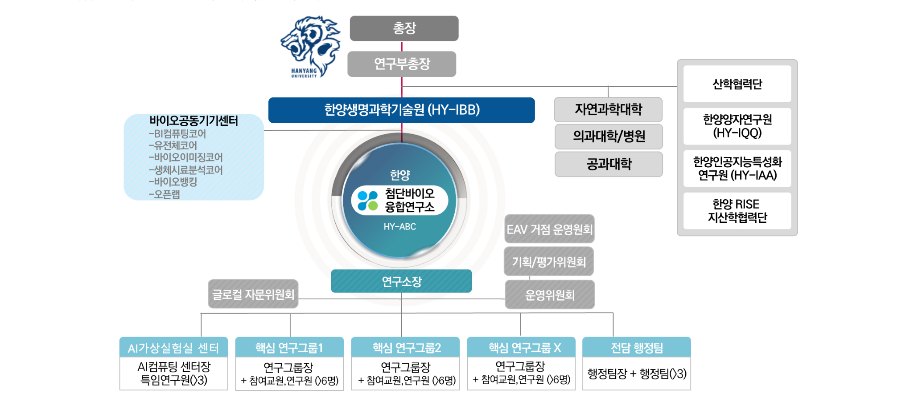

과제 개요
첨단바이오융합연구소(HY-ABC)는 2026년 교육부 이공분야 학술연구지원사업 「글로컬랩(거점형)」에 선정되어, 바이오빅데이터와 AI를 융합한 AI 가상실험실 → 자율실험실 기반의 지역거점 연구 생태계를 구축합니다. "지역(수도권) 혁신을 이끄는 기초연구 생태계 거점 육성"이라는 글로컬랩의 취지를 EAST-ARC Valley AI-바이오 거점 모델로 구현합니다.
- 사업 : 2026년도 이공분야 학술연구지원사업 글로컬랩(거점형) · 교육부
- 주관연구기관 : 한양대학교 (특성화연구원 한양생명과학기술원 산하 HY-ABC)
- 주관연구책임자 : 남진우 연구소장
- 사업기간 : 9년 (3+3+3단계)
- 연구비(1차년도) : 750,000천원 (직접비 675,000 + 간접비 75,000)
비전 · 3대 전략
AI-강화 첨단바이오융합연구소(HY-ABC) 육성을 통한 EAST-ARC Valley의 글로컬 실현
전략 1 · AI바이오 특화 융합연구소 육성
3대 핵심연구그룹 운영 · AI가상실험실→자율실험실 단계적 구축 · Bio소재/정밀진단/RNA치료제 가상실험실
전략 2 · EAST-ARC Valley 거점 구축
판교 첨단바이오융합컴플렉스 조성 · 바이오플러스 등 기업협력 · Tier 1/2/3 혁신 공유 플랫폼 운영
전략 3 · Post-AI 인재양성 + 창업인큐베이션
양손잡이(Dual-Skill) AI바이오 융합인재 양성 · FrameShift 창업인큐베이션 · RISE 사업단 500개사 멤버십 연계
3대 핵심연구그룹 · AI가상실험실센터 (연구조직 · 연계)
RG1 · 바이오의약소재 탐색·설계
그룹장 박범수 교수 (생명과학과·분자생태학)
참여교원 진언선 · 이원철 · 이진원 · 김도현
해양·담수 생물다양성(미세조류·환경미생물·해양생물) 빅데이터를 신약소재 발굴에 활용. AI 구조예측(AlphaFold·ESMFold)으로 수퍼 유전자·신규 생합성 유전자군(BGC)을 발굴하는 투트랙(Two-Track) 전략, CRISPR-Cas 이종발현 세포공장 구축.
AI가상실험실 : AI 소재 생성 · DBTL 자동화 · 가상 스크리닝
RG2 · 정밀의료·바이오혁신의약
그룹장 전대원 교수 (의과대학 내과학)
참여교원 윤아일린 · 김유정 · 최종욱
대사질환(지방간·제2형당뇨·고지혈·고혈압) 다중오믹스 통합과 Perturbation 기반 치료반응·바이오마커 예측 AI. 연구자가 자연어만으로 설계·분석·검증하는 폐쇄루프형 자율연구(가상실험실) 플랫폼 구축.
AI가상실험실 : 오믹스 통합 · 예측 · 임상코호트 분석
RG3 · RNA·펩타이드 치료제
그룹장 김영필 교수 (생명과학과)
참여교원 이경민 · 최재훈 · 최준호 · 신인철
MASH·제2형당뇨 등 대사질환 표적에 대해 ①siRNA/ASO ②인공항체(나노바디) ③고리형 펩타이드(SICLOPPS) 3대 모달리티를 AI로 설계. 자율실험실 고속 스크리닝과 표적형 통합 전달 플랫폼으로 복합치료제 정밀 설계.
AI가상실험실 : 치료제 라이브러리 스크리닝 · 기전규명 · 최적화
AI바이오 가상실험실 개발센터 (3대 그룹 공통 협력 허브) — 남진우 소장(겸직) · 하유진 · 오요한 · 이정연 · 황우창 (바이오공동기기센터 AI-컴퓨팅 코어).
3대 핵심연구그룹이 공통으로 협력하는 허브로서 데이터·모델을 실시간 공유·상호 검증하여, 한 그룹의 발견이 즉시 다른 그룹의 연구 설계로 이어지는 지능형 피드백 루프(Lab-in-the-Loop)를 구성합니다. 이를 통해 그룹간 칸막이를 제거하고 연구 속도를 혁신적으로 높입니다.
공통 파이프라인 : 다중오믹스 DB → AI 다층 가상실험실 → 자율실험실 고속검증 → Lab-in-the-Loop 선도물질 최적화 (self-improving 피드백 루프)
EAST-ARC Valley 바이오 혁신 거점
서울 동부(왕십리/성수/수서/문정) → 수도권 남부(판교·광교) → 안산(ERICA)을 잇는 활(ARC)형 AI바이오 지산학 회랑이며, HY-ABC가 앵커 허브 역할을 수행합니다.
- 왕십리 ★핵심 — 한양대·HY-ABC·한양대병원 : 핵심 허브·AI가상실험실
- 성수 — 포트레이·NOBO Medicine : AI스타트업 공동연구·공간전사체·유전체분석
- 수서·문정 — 써모피셔·지니너스·온코크로스 : 정밀진단·AI신약개발 협력
- 판교·광교 — 바이오플러스·바이오넥서스·IT/AI기업 : 첨단바이오융합컴플렉스 조성(~'29)
- 안산 ERICA — HY-IPT·카카오데이터센터 : 빅데이터·Physical-AI·GPU 연계
연구소 거버넌스 (의사결정체계)

9년(3+3+3) 핵심 성과목표
SCI(E) 논문 150편 · 특허 55건+
상위 25% 저널 중심 우수성과 창출
바이오소재 설계 50건+
AI 설계 신규 바이오소재 · 마커·표적·치료제 30건
창업 인큐베이팅 3개사
글로벌 AI바이오 연구소 도약
인프라 : 바이오공동기기센터 6코어 82대+ · AI컴퓨팅(A100 80GB SXM 8장 + H100·RTX3090) · 전용 연구공간 165평+57평
글로컬랩 융합인재교육 프로그램
Post-AI 시대형 양손잡이(Dual-Skill) AI바이오 융합인재 양성 — Wet(생명과학·실험) × Dry(AI·데이터) Cross-Training 의무화, 자율실험실(Bio-Foundry) 기반 교육, 글로컬 커리어 패스로 우수 학문후속세대의 유치·정착 선순환 구축
① Post-AI 양손잡이 교육 트랙
Dual-Skill Master
Bio-Data Literacy 전용 커리큘럼(RNA 구조예측 AI 모델링 등) 운영, Wet/Dry lab 연구자 간 Cross-Training 의무화로 실험·AI 역량을 겸비한 융합 연구인력 양성.
② AI-시너지 인재
AI-Augmented Scientist
자율실험실 활용 교육으로 연구원은 설계·해석에 집중. AI+IP 융합 전문가(삼극특허 전략 교육 병행) 육성으로 창의적 통찰이 혁신의 중심이 되는 Human-AI 협력 모델 구축.
③ 글로컬 커리어 패스 & 유치
파트너기업–글로컬랩 Joint-Appointment, Global Mobility 단기 연수, 글로컬랩–RISE–BK21 연계 정착 장학금, 채용보장형 현장 파견(Residential Program)으로 지역 정착 지원.
성장단계별 지원 — 학부(Bio-AI 창업 인재·CES 참가) → 학·석·박 통합과정 → 대학원(Full-Stipend : 석사 180만·박사 250만원↑/월, Glocal Fellowship 월 +100만) → 박사후·독립연구자(해외 Co-advisor 1:1, 해외학회 전액, Staff Scientist 임용).
연계 — 글로컬랩 × BK21(산업 난제 연구주제화·IC-PBL) · 글로컬랩 × RISE(자율실험실 전주기 숙련) · AI 인재양성 부트캠프(2025~) · 한양 Bridge / 인터칼리지 융합학부.
| 연간 인력 확보(정상단계 기준) | 학사(인턴) | 석사과정 | 박사과정 | 박사후연구원 |
|---|---|---|---|---|
| 1차년도(’26) | 6 | 6 | 4 | 2 |
| 정상단계(’27~) | 10 | 15 | 10 | 5 |
※ 목표 : 지역 정주 연구인력 누적 30명 이상 · 국내외 우수 Post-Doc 유치를 통한 Staff Scientist·연구교수 임용 (출처: 2026 글로컬랩(거점형) 연구계획서)
논문 사사 (Acknowledgement)
[국문] 이 성과(논문)는 2026년도 대한민국 교육부와 한국연구재단의 지원을 받아 수행된
글로컬랩(거점형) 사업의 결과입니다. (과제번호: 000)
[English] This work was supported by the GlocalLab (Hub-type) program
through the National Research Foundation of Korea (NRF) funded by the Ministry of Education (No. 000).
※ 과제번호는 추후 확정되는 번호로 000을 대체해 사용하시기 바랍니다.